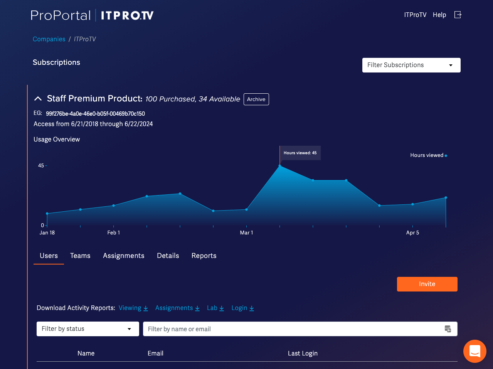

Admin Portal
The goal of this project was to provide an administrative user with tools to manage teams and view each team member's learning progress. Implementing visual representations of progress and growth contributed to customer retention.
The company collected feedback through surveys, phone conversations, and member services/support chat. Data was collected over time and the UX team was able to wireframe the information architecture. Mockup and prototype iterations were designed in Adobe XD and soon after, developed in the functional programming language Elm.
